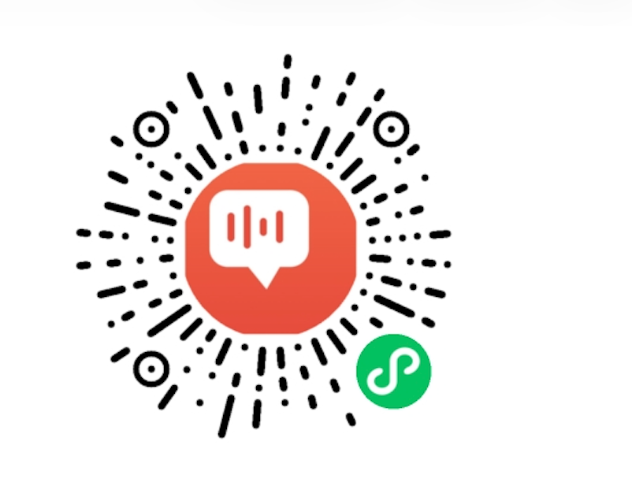
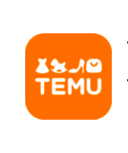
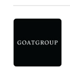

家有2宝 · 小黑 · 小八
不只是做管理，也在持续学习新技能、输出专业内容。以下是我业余时间做的几个项目。
我把客服运营经验，训练成了10+个 AI 技能——让经验可复制、可调用，累计下载使用500+。
BPO全链路运营咨询：供应商选择、合同治理、离岸外包决策、海外团队管理
从零搭建客服团队：模式选择（自营/外包/混合）、组织架构、HC规划
咨询量预测、HC预测、多班次排班方案生成
新人入职/在岗进阶/PIP改进三阶段培训材料自动生成，支持多行业
电话/在线/邮件/社交媒体四渠道话术，覆盖电商/SaaS/金融等全行业
一体化绩效看板：满意度、响应时效、解决率等核心指标可视化
客户声音全链路分析：主题聚类、情感分析、趋势追踪、行动闭环
中英日韩四语种质检审计：合规风险识别、情绪分析、质检报告生成
国内外客服行业动态日报：自营+外包，电商/SaaS/金融/游戏全行业覆盖
以上工具均为 WorkBuddy Skill，可在 SkillHub 技能市场 → 搜索名称免费安装使用。
独立设计并运用AI开发了一款面向外国用户的中文学习网站，涵盖拼音、词汇、对话、练习四大模块。纯英文界面，交互流畅，支持移动端适配。
新号运营2周达到等级4，创作分5433（远超同等级均值）。
运用AI开发了英语口语练习的微信小程序。从产品定位、需求梳理到功能验收全链路。

入行这些年，我对"客服"这件事的认知被反复打破和重建。
早期我觉得客服就是把问题解决好、把人管好——效率、质量、满意度，三个指标跑通就对了。后来带过自营团队，也接手过外包供应商，才发现客服运营的核心矛盾不是技术问题，而是如何在成本、质量、规模三者之间找到动态平衡。自营有控制力但弹性不足，外包灵活但质量难以把控——这不是选择题，是要持续做trade-off的运营题。
真正让我重新审视这个行业的是AI。在GOAT参与AI回复项目时，我第一次意识到：AI不是来替代客服的，是来释放客服的。那些重复性高、规则明确的场景交给机器，人去做机器做不到的事——判断、共情、处理异常。这个认知转变让我意识到，经验可以被工具化、被复制。一个客服管理者的价值，也从「自己能干」变成了「能让更多人干好」。
我现在对客服行业的判断很简单：未来不属于最会省钱的外包商，也不属于最懂话术的培训师，属于那些能把人效和AI效能拧成一股绳的人。我在找这样的机会，也在成为这样的人。

拼多多 · 产品部
GOAT（高特）· 上海客服部